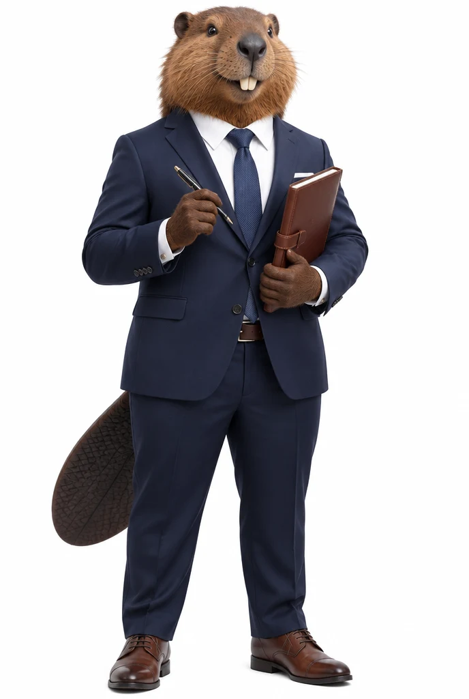

Тест для участников ToT
Определите свой архетип
Кто вы в обучении людей:
Организатор, Тренер или Наставник



ОрганизаторТренерНаставник
18 вопросов5 минутВаша роль и шаг роста
Имя увидит только тренер в общей сводке группы.
Как отвечать
1
Сначала нажмите самый ваш ответОн получит номер 1.
2
Потом — второй по близостиОн получит номер 2.
3
Последний ответ — номер 3Он встанет сам.
💡Выбирайте то, что нравится
Не то, что уже умеете. Представьте, что у вас есть все навыки, время и деньги. Правильных ответов нет.
Нажмите ответы по порядку: 1 — больше всего про вас
🕰️
Теперь вспомните,
как было на самом деле
Ещё 3 вопроса. Здесь про ваш реальный опыт, а не про мечты.
Уточняем
Две роли у вас почти равны. Выберите один ответ.
Вы —
🎯Ваша суть
💪Ваши сильные стороны
🤝Ваша пара ролей
⭐Где вы сияете на тренинге
👀На что обратить внимание
🚀Шаг роста на эту неделю
📊Ваши три роли
✍️Насколько это про вас?
совсем не про меняточно про меня
Спасибо! Ответ отправлен.
Impact Consulting · Training of Trainers · тест-игра для самопознания, не психологический диагноз